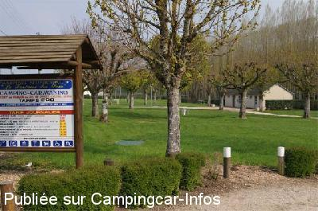

ACS = Aire de services sur camping acceptant le passage pour les services de :
CHENONCEAUX
(N° 281)
Accès/adresse :
Chemin de la Varenne
La Fontaine des Prés
Camping Municipal de Chenonceaux *
37150 CHENONCEAUX
La Fontaine des Prés
Camping Municipal de Chenonceaux *
37150 CHENONCEAUX
Latitude : (Nord) 47.33028° Décimaux ou 47° 19′ 49′′
Longitude : (Est) 1.07028° Décimaux ou 1° 4′ 13′′
Tarif : 2015
C-C, 2 personnes : 14 €
Emplacement : 2,30 à 2,80 €
Personne + 10 ans : 3 €
Enfant - 10 ans : 2 €
Électricité : 2,65 €
Services C-C de passage : 4 €
Type de borne : Artisanale
Services :


Accès handicapés
Jeux
Autres informations :
Ouvert du 13/06 au 15/09
53 emplacements ombragés
Tel mairie +33 (0)247 239 013 mairie.chenonceaux@wanadoo.fr
http://www.chenonceaux-blere-tourisme.com

Le 18/04/2010 par Dominique
de
Balibalo
le 10/05/2008 :
Je confirme 13,50€ mais avec l'électricité. Malgré la proximité de la voie SNCF calme mais simple. Peu de trains car voie transversale Vierzon tours. Parking camping-cars du château stationnement interdit de 23h à 7 h pas glop!
Je confirme 13,50€ mais avec l'électricité. Malgré la proximité de la voie SNCF calme mais simple. Peu de trains car voie transversale Vierzon tours. Parking camping-cars du château stationnement interdit de 23h à 7 h pas glop!